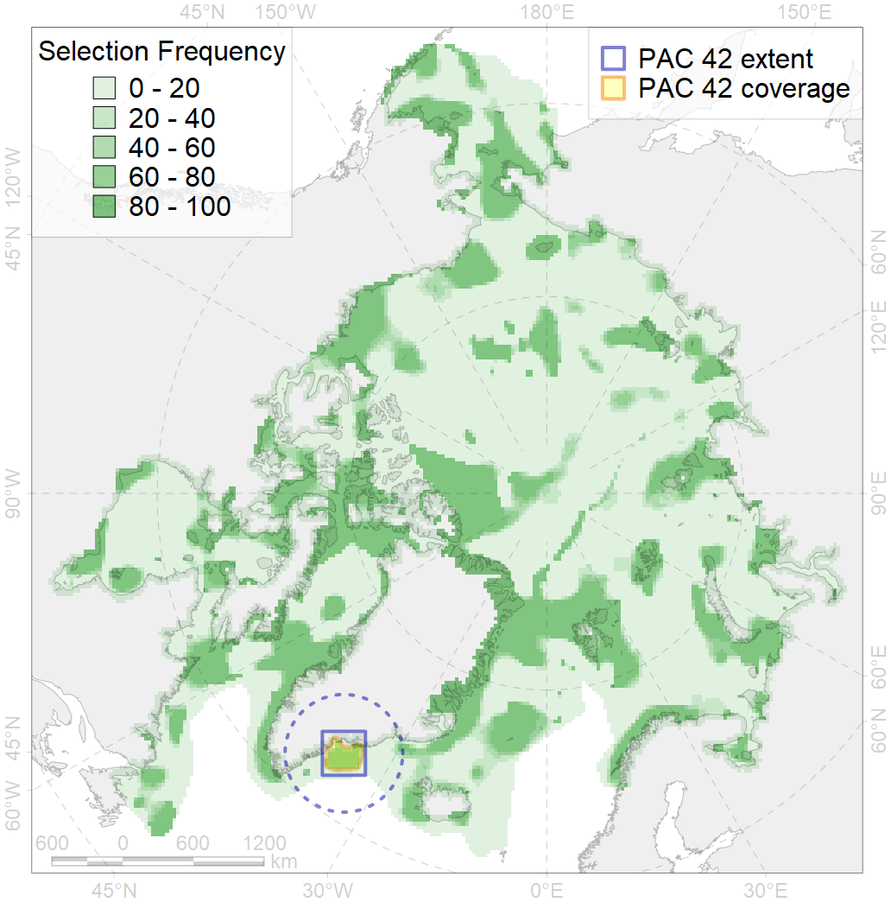
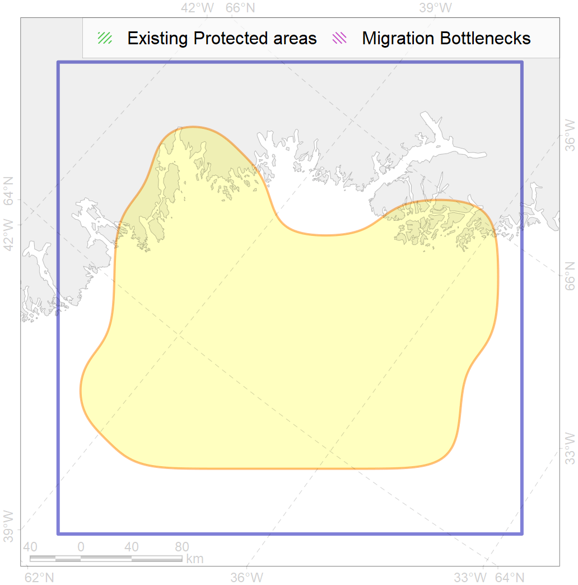

42
For more information regarding this PAC and to conduct custom spatial analysis using the PAC data or any spatial query, please consult Accenter.

1
CFs entirely within the PAC area
3
CFs at least 25% within the PAC area
5
CFs with at least 50% of their target achieved in the PAC
9
CFs with at least half of their target achieved in the PAC
| CF ID | CF Name | Proportion in the PAC | Conservation Target | Contribution to ArcNet Target Achievement | PAC’s Contribution to the Achieved Target |
|---|---|---|---|---|---|
| 7264 | SE Greenland Bank | 100.0% | 70.0% | 142.9% | 100.0% |
| 6052 | Common eider (Somateria mollissima borealis) East Greenland breeding&moulting grounds | 34.8% | 67.2% | 43.3% | 43.0% |
| 7162 | III.6.1.2. SE Greenland glacial troughs | 28.7% | 11.7% | 211.5% | 61.4% |
| 7160 | III.6.1. Southeast Greenland shelf | 23.8% | 10.4% | 200.9% | 49.5% |
| 5098 | White-beaked dolphin feeding area in the Central North Atlantic | 19.4% | 12.0% | 156.2% | 51.5% |
| 7161 | III.6.1.1. SE Greenland medium and low profile shelf | 16.1% | 12.1% | 119.6% | 32.7% |
| 5048 | Fin whale summer feeding areas in the East Greenland and West Iceland | 15.7% | 26.4% | 54.6% | 54.4% |
| 3025 | Marginal Ice Zone distribution in April in the Greenland Sea LME | 11.2% | 35.0% | 27.3% | 26.2% |
| 7163 | III.6.2. Southwest Greenland slope | 7.6% | 13.4% | 56.0% | 24.2% |
| 2028 | Hooded seal molting areas | 5.6% | 38.4% | 11.8% | 11.4% |
| 4028 | Feeding/migration area of the Atlantic salmon (Salmo salar) American populations | 4.7% | 12.0% | 35.0% | 11.2% |
| 4085 | Fish zoogeography, Arctic Region, Subarctic Transitional-Atlantic Province, Labrador – S Greenland District | 4.7% | 8.6% | 48.1% | 10.1% |
| 5059 | Humpback whale summer feeding areas in the Eastern Greenland and Iceland | 3.8% | 12.0% | 26.9% | 9.0% |
| 7171 | VII.1. Greenland Sea and Fram Strait Basin basins VII.1.1. Rises (slope foot) | 3.4% | 14.0% | 22.0% | 18.3% |
| 6076 | Common murre (Uria aalge aalge) wintering grounds | 3.0% | 18.0% | 14.6% | 7.8% |
| 4049 | Range of the Haddock (Melanogrammus aeglefinus) | 2.8% | 6.0% | 41.6% | 6.6% |
| 6002 | Little Auk (Alle alle alle) winetring grounds | 2.7% | 24.0% | 10.5% | 7.3% |
| 5101 | Bottlenose whale summer feeding areas in the Northeast Atlantic | 2.5% | 12.0% | 19.7% | 15.8% |